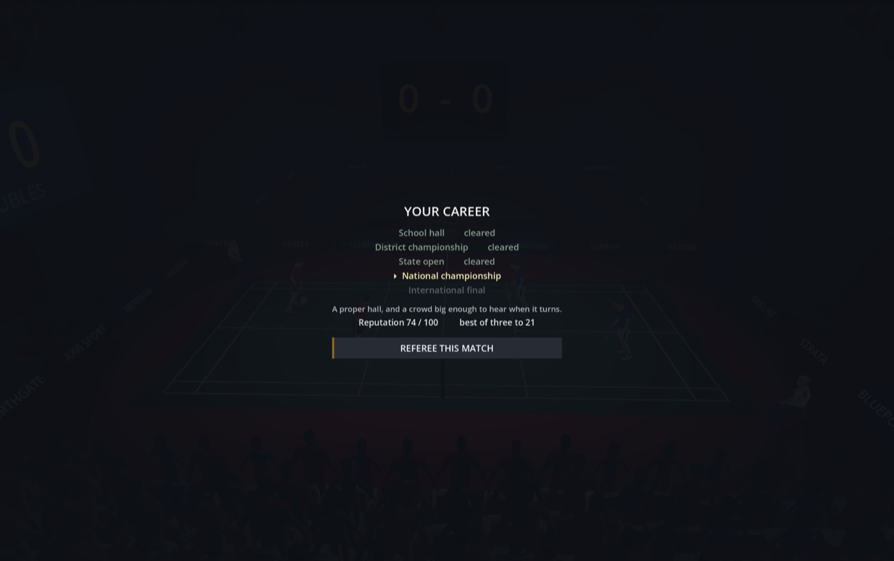

Badminton
Two line judges, diagonal corners
A shuttlecock with its own drag model, and two officials who are wrong about as often as a coin on the close ones. Agree with a mistake and the blame is shared in plain sight.

You are the umpire, not the athlete.
The match is played in front of you with real physics, so the game already knows exactly where the shuttle landed, to the millimetre. It is never going to tell you. Your job is to say what happened — and nothing in the game requires that to be true.
Shuttle camLive from the line
This is the moment the whole game is built around, running here in the page. The overhead camera shows you what it shows the umpire — not enough. Left click for IN, right click for OUT, and the longer you sit there the more it looks like you are deciding which answer suits you.
In the game: left click in · right click out · L let · W service court · F fault or card
The shuttle is down. Nobody in this building is certain except the simulation, and it is not talking.
Twelve thousand people are watching one person, and it is not either of the players.
Six sportsOne official · one reputation
Every sport sounds like itself — a ball into sand, a ball on a wooden hall floor and a ball off a hard court are three different noises, and the surface is half of what a landing tells you. Each one also asks you to judge something none of the others do.
Two line judges, diagonal corners
A shuttlecock with its own drag model, and two officials who are wrong about as often as a coin on the close ones. Agree with a mistake and the blame is shared in plain sight.

Did it brush a hand?
On sand, where the ball flies out past a block and only you can say whether it touched a finger on the way.

Rotation, before the serve
The only one that asks you to know something before the ball is struck: six players rotate through six positions, and the referee either kept track or did not.

First serve, second serve, rally
A point is not one event. The same call costs a serve at one moment and the match at another, and you always know which moment you are in.

No line judges. Anywhere.
The sport has none at any level — at a table 2.74 m long there is nowhere to put an official you cannot already see. Everything the hall believes is something you told them.

Judged before the kick
ISTAF 2024 rules, regu or doubles. The tekong's standing foot has to stay in the service circle while the ball is thrown. Sets go to 15, and at 14-14 you announce setting up to 17.
Nothing countsYour mistakes for you
The game knows where it landed. It is never going to tell you.
Most sports games ask whether you can play. This one asks whether you can be trusted. The interesting part is not that you can cheat — it is that the game never tells you whether you got away with it.
The feedback is the room: how the crowd sounds, whether a coach stands up, whether the player whose point you just took turns round and argues with the chair. Nobody in those seats will ever tell you where the ball landed, however angry they get. Every one of them is shouting about you.

The jobWhat you are actually deciding
IN, OUT, LET, and the four faults: net touch, carry, double hit, obstruction. Every fault has both a recorded truth and something visible on court — the net shakes, the ball sticks on the racket for a moment, a player genuinely reaches over.
Which means ignoring one is itself a lie.
Two of them, at diagonally opposite corners, so the pair see all four boundary lines between them. Agree with a mistake and the blame is shared with an official in plain sight. Overrule them and the hall has watched two officials disagree, with only your call left standing.
Two reviews a side per game, a successful one handed back. The load-bearing design choice is that players sometimes challenge a call you got right — otherwise a challenge would be a verdict announced in advance.
It is the one moment in the game where the truth becomes public.
Your name, out of a hundred, carried between matches and shared across all six sports. It appears at the bottom of the screen only when it moves, for three seconds, and then it is gone.
It never tells you whether a particular call was believed. It tells you what the night has cost you so far, at the moment it costs it. And what gets an umpire caught is not being wrong — it is being wrong in the same direction every time.
There are deliberately no bribes. An envelope makes the umpire a criminal, and once they are a criminal the only interesting question — would you? — has been answered for you.
Instead: a tournament that needs a particular name in the final. An appointments panel marking whether anything happened rather than whether you were right. A player you refereed badly last season, carried in your save file. And your own first plainly wrong call, pulling you to put it right by getting a second one wrong the other way. The reward is always for the result, never for the lie.



DetailsWhat it is, honestly